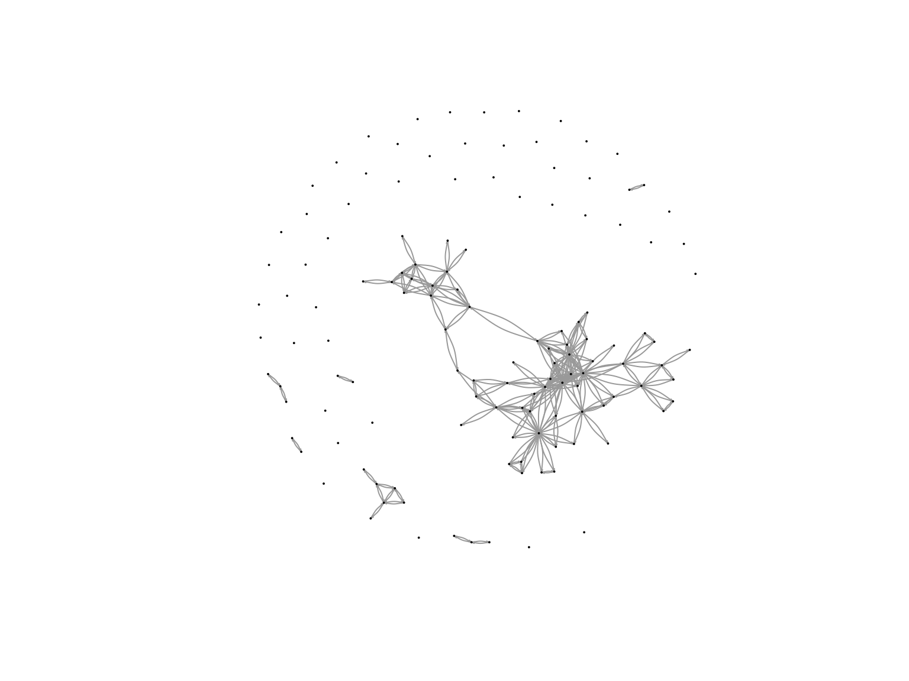

Works
Now get a dataframe for works,
works <- scholars_sel$work
works_id <- unlist(lapply(works, function(l) l$id)) #id for works
works_author <- unlist(lapply(works, function(l) l$author), recursive = FALSE) #authors of the work
works_year <- unlist(lapply(works, function(l) l$publication_year), recursive = FALSE) #year
df_works <- tibble(works_id, works_author, works_year) #id-work, authors, year
dups <- which(duplicated(works_id))
# why are there some many papers of Batenburg duplicates
df_works <- df_works[-dups, ]
df_works_newer <- df_works[df_works$works_year > 2014, ]
df_works_w2 <- df_works[df_works$works_year > 2019, ]
Look at the Data
Now we can use the data, that we have cleaned up a bit, to make a
network-plot, and see what we’re dealing with.
We’ll start easy though, to get a base-level intuitive understanding
of what the data look like – and for that, we’re using only the data of
Radboud’s sociology department in our first wave.
RU Sociology
Graph
#save the output of your function
matrix_ru_soc <- fcolnet(data = scholars,
university = "RU",
discipline = "sociology",
waves = list(c(2015, 2018), c(2019, 2023)),
type = c("first"))
mrs_graph1 <- igraph::graph_from_adjacency_matrix(
matrix_ru_soc$nets[1,,], #for this example I take the first wave of data. (thus I select the array of networks and take the first matrix)
mode = c("directed"),
weighted = NULL,
diag = FALSE,
add.colnames = NULL,
add.rownames = NULL
)
## Warning in igraph::graph_from_adjacency_matrix(matrix_ru_soc$nets[1, , ], :
## Same attribute for columns and rows, row names are ignored
plot(mrs_graph1,
vertex.label= NA,
edge.width = 0.2,
edge.arrow.size =0.2)
 Then make it a bit more complicated, and add a new discipline (political
science), and another university.
Then make it a bit more complicated, and add a new discipline (political
science), and another university.
RU & UvT
Sociology and Political Science Graph
matrix_ru_socpol <- fcolnet(data = scholars,
university = c("RU", "UvT"),
discipline = c("sociology", "political science"),
waves = list(c(2015, 2018), c(2019, 2023)),
type = c("all"))
mrsp <- igraph::graph_from_adjacency_matrix(
matrix_ru_socpol$nets[2,,], #now, I take the second wave
mode = c("directed"),
weighted = NULL,
diag = FALSE,
add.colnames = NULL
)
plot(mrsp,
vertex.label = NA,
vertex.size = .5,
edge.curved = 0.2, # curved edges is always a nice touch
edge.arrow.size = 0.1)

… and see if we can create some differentiations in the plot to see
how different characteristics interact (discipline, university)
#Let us find ego characteristics.
#first fish out the data
matrix_ru_socpol_df <- matrix_ru_socpol$data
#same complicated structure as 'scholars' thus first make a dataframe from the list in which all info was saved.
mrusp_df_ego <- do.call(rbind.data.frame, matrix_ru_socpol_df$demographics)
#DO NOT MESS UP THE ORDER! THUS IF YOU JOIN THIS DATA WITH YOUR OWN DATA CHECK THAT ORDER REMAINED THE SAME!!
plot(mrsp,
vertex.color = ifelse(mrusp_df_ego$discipline.24 == "sociology", "red", "blue"), #now, I can use actor attributes for plotting.
vertex.label = NA,
edge.width = 0.2,
edge.arrow.size =0.2,
vertex.size = 5)

LS0tCnRpdGxlOiAiVGhlIERhdGFzZXQiCm91dHB1dDogaHRtbF9kb2N1bWVudApkYXRlOiAiMjAyNC0xMC0wOCIKLS0tCgpgYGB7ciBzZXR1cCBwYWNrYWdlcywgaW5jbHVkZT1GQUxTRX0KcmVxdWlyZSh0aWR5dmVyc2UpCnJlcXVpcmUoaWdyYXBoKQpyZXF1aXJlKHNoaW55KQpyZXF1aXJlKFJTaWVuYSkKcmVxdWlyZShybWRmb3JtYXRzKQpyZXF1aXJlKHByZXR0eWRvYykKcmVxdWlyZShocmJydGhlbWVzKQpyZXF1aXJlKHRpbnQpCnJlcXVpcmUodHVmdGUpCnJlcXVpcmUocHN5Y2gpCmxpYnJhcnkoZGF0YS50YWJsZSkgIApsaWJyYXJ5KHhtbDIpCmxpYnJhcnkocnZlc3QpCmxpYnJhcnkoeG1sMikKbGlicmFyeShYTUwpCmBgYAoKYGBge3Igc2V0dXAgZGF0YSwgaW5jbHVkZT1GQUxTRX0KbG9hZCgiL1VzZXJzL2hhbm5haC9EZXNrdG9wL1NlYXNvbiA3LCBQYXJ0IDEvU29jaWFsIE5ldHdvcmtzL2xhYmpvdXJuYWwvc2Nob2xhcnNfMjAyNDA5MjQucmRhIikKc2Nob2xhcnMgPC0geApybSh4KQpgYGAKCiMgRXh0cmFjdCAnRGVtb2dyYXBoaWNzJyBEYXRhCgpcCgpFeHRyYWN0aW5nIHRoZSBkZW1vZ3JhcGhpY3MtdGliYmxlL2FzcGVjdCBvZiB0aGUgZGF0YSB3aWxsIGFsbG93IHVzIHRvIGVtcGxveS9sZXZlcmFnZSBlZ28tbGV2ZWwgY2hhcmFjdGVyaXN0aWNzIG9mIG91ciBkYXRhIHdpdGhvdXQgaGF2aW5nIHRvIHVzZSB0aGUgZnVsbCAxR0IgZGF0YXNldC4gCgpgYGB7ciBjb3BpZWQgZnJvbSBqb2NoZW0gMSwgcmVzdWx0cyA9IEZ9CiNjb3BpZWQgZnJvbSBqb2NoZW0KIyAoc29jaW9sb2d5LCBSVSkKZGVtb2dyYXBoaWNzIDwtIGRvLmNhbGwocmJpbmQuZGF0YS5mcmFtZSwgc2Nob2xhcnMkZGVtb2dyYXBoaWNzKQpkZW1vZ3JhcGhpY3MgPC0gZGVtb2dyYXBoaWNzICU+JSAjIHdobydzIHdobwogICAgbXV0YXRlKFVuaXZlcnNpdGVpdDEuMjIgPSByZXBsYWNlKFVuaXZlcnNpdGVpdDEuMjIsIGlzLm5hKFVuaXZlcnNpdGVpdDEuMjIpLCAiIiksIFVuaXZlcnNpdGVpdDIuMjIgPSByZXBsYWNlKFVuaXZlcnNpdGVpdDIuMjIsCiAgICAgICAgaXMubmEoVW5pdmVyc2l0ZWl0Mi4yMiksICIiKSwgVW5pdmVyc2l0ZWl0MS4yNCA9IHJlcGxhY2UoVW5pdmVyc2l0ZWl0MS4yNCwgaXMubmEoVW5pdmVyc2l0ZWl0MS4yNCksCiAgICAgICAgIiIpLCBVbml2ZXJzaXRlaXQyLjI0ID0gcmVwbGFjZShVbml2ZXJzaXRlaXQyLjI0LCBpcy5uYShVbml2ZXJzaXRlaXQyLjI0KSwgIiIpLCBkaXNjaXBsaW5lLjIyID0gcmVwbGFjZShkaXNjaXBsaW5lLjIyLAogICAgICAgIGlzLm5hKGRpc2NpcGxpbmUuMjIpLCAiIiksIGRpc2NpcGxpbmUuMjQgPSByZXBsYWNlKGRpc2NpcGxpbmUuMjQsIGlzLm5hKGRpc2NpcGxpbmUuMjQpLCAiIikpCgpzYW1wbGUgPC0gd2hpY2goKGRlbW9ncmFwaGljcyRVbml2ZXJzaXRlaXQxLjIyID09ICJSVSIgfCBkZW1vZ3JhcGhpY3MkVW5pdmVyc2l0ZWl0Mi4yMiA9PSAiUlUiIHwgZGVtb2dyYXBoaWNzJFVuaXZlcnNpdGVpdDEuMjQgPT0KICAgICJSVSIgfCBkZW1vZ3JhcGhpY3MkVW5pdmVyc2l0ZWl0Mi4yNCA9PSAiUlUiKSAmIChkZW1vZ3JhcGhpY3MkZGlzY2lwbGluZS4yMiA9PSAic29jaW9sb2d5IiB8IGRlbW9ncmFwaGljcyRkaXNjaXBsaW5lLjI0ID09CiAgICAic29jaW9sb2d5IikpICNzb2Npb2xvZ2lzdHMgYXQgcnUKCmRlbW9ncmFwaGljc19zb2MgPC0gZGVtb2dyYXBoaWNzW3NhbXBsZSwgXQpzY2hvbGFyc19zZWwgPC0gbGFwcGx5KHNjaG9sYXJzLCAiWyIsIHNhbXBsZSkKYGBgCgojIEV4dHJhY3QgT3BlbmFsZXggSURzCgpFeHRyYWN0IE9wZW5BbGV4IGlkJ3MsIGFuZCBtYWtlIGEgbWF0cml4IHRoYXQgd2UgY2FuIHVzZSB0byBtYWtlIGEgY29sbGFib3JhdGlvbiBtYXRyaXguIAoKYGBge3IgY29waWVkIGZyb20gam9jaGVtIDIsIHJlc3VsdHMgPSBGfQppZHMgPC0gZGVtb2dyYXBoaWNzX3NvYyRhdV9pZCAjb3BlbmFsZXggaWRzCndhdmUyIDwtIHdhdmUxIDwtIG1hdHJpeCgwLCBucm93ID0gbGVuZ3RoKGlkcyksIG5jb2wgPSBsZW5ndGgoaWRzKSwgZGltbmFtZXMgPSBsaXN0KGlkcywgaWRzKSkKI21hdHJpeCBmb3IgYWxsIGlkcwpgYGAKCiMgV29ya3MgCgpOb3cgZ2V0IGEgZGF0YWZyYW1lIGZvciB3b3JrcywgCgpgYGB7ciBjb3BpZWQgZnJvbSBqb2NoZW0gMywgcmVzdWx0cyA9IEZ9CndvcmtzIDwtIHNjaG9sYXJzX3NlbCR3b3JrCndvcmtzX2lkIDwtIHVubGlzdChsYXBwbHkod29ya3MsIGZ1bmN0aW9uKGwpIGwkaWQpKSAjaWQgZm9yIHdvcmtzCndvcmtzX2F1dGhvciA8LSB1bmxpc3QobGFwcGx5KHdvcmtzLCBmdW5jdGlvbihsKSBsJGF1dGhvciksIHJlY3Vyc2l2ZSA9IEZBTFNFKSAjYXV0aG9ycyBvZiB0aGUgd29yawp3b3Jrc195ZWFyIDwtIHVubGlzdChsYXBwbHkod29ya3MsIGZ1bmN0aW9uKGwpIGwkcHVibGljYXRpb25feWVhciksIHJlY3Vyc2l2ZSA9IEZBTFNFKSAjeWVhcgpkZl93b3JrcyA8LSB0aWJibGUod29ya3NfaWQsIHdvcmtzX2F1dGhvciwgd29ya3NfeWVhcikgI2lkLXdvcmssIGF1dGhvcnMsIHllYXIKZHVwcyA8LSB3aGljaChkdXBsaWNhdGVkKHdvcmtzX2lkKSkKIyB3aHkgYXJlIHRoZXJlIHNvbWUgbWFueSBwYXBlcnMgb2YgQmF0ZW5idXJnIGR1cGxpY2F0ZXMKCmRmX3dvcmtzIDwtIGRmX3dvcmtzWy1kdXBzLCBdCmRmX3dvcmtzX25ld2VyIDwtIGRmX3dvcmtzW2RmX3dvcmtzJHdvcmtzX3llYXIgPiAyMDE0LCBdCmRmX3dvcmtzX3cyIDwtIGRmX3dvcmtzW2RmX3dvcmtzJHdvcmtzX3llYXIgPiAyMDE5LCBdIApgYGAKCmBgYHtyIGpvY2hlbSBkZWVkIGRpdCwgaW5jbHVkZSA9IEYsIHJlc3VsdHMgPSBGfQojIENodW5rIDQKCiMjIElmIHdlIHdhbnRlZCB0bywgd2UgY291bGQKCiNmaXJzdCB0byBvdGhlcnMKZm9yIChpIGluIDE6bnJvdyhkZl93b3Jrc193MikpIHsKICAgIGVnbyA8LSBkZl93b3Jrc193MiR3b3Jrc19hdXRob3JbaV1bWzFdXSRhdV9pZFsxXQogICAgYWx0ZXJzIDwtIGRmX3dvcmtzX3cyJHdvcmtzX2F1dGhvcltpXVtbMV1dJGF1X2lkWy0xXQoKICAgIGlmIChzdW0oaWRzICVpbiUgZWdvKSA+IDAgJiBzdW0oaWRzICVpbiUgYWx0ZXJzKSA+IDApIHsKICAgICAgICB3YXZlMlt3aGljaChpZHMgJWluJSBlZ28pLCB3aGljaChpZHMgJWluJSBhbHRlcnMpXSA8LSAxCiAgICB9Cn0gCiNmb3IgZWFjaCByb3csIG9mIGRhdGFmcmFtZXMgb2Ygd29yaywgZG8gZWdvcyAoZmlyc3QgYXV0aCkgYW5kIGFsdGVycyAob3RoZXJzKSBvbiBtYXRyaXggKGFuZCB0aGVuOiBhcmUgdGhleSB0aGUgc2FtZSBvciBub3QpCgojbGFzdCB0byBvdGhlcnMKZm9yIChpIGluIDE6bnJvdyhkZl93b3Jrc193MikpIHsKICAgIGVnbyA8LSByZXYoZGZfd29ya3NfdzIkd29ya3NfYXV0aG9yW2ldW1sxXV0kYXVfaWQpWzFdCiAgICBhbHRlcnMgPC0gcmV2KGRmX3dvcmtzX3cyJHdvcmtzX2F1dGhvcltpXVtbMV1dJGF1X2lkKVstMV0KCiAgICBpZiAoc3VtKGlkcyAlaW4lIGVnbykgPiAwICYgc3VtKGlkcyAlaW4lIGFsdGVycykgPiAwKSB7CiAgICAgICAgd2F2ZTJbd2hpY2goaWRzICVpbiUgZWdvKSwgd2hpY2goaWRzICVpbiUgYWx0ZXJzKV0gPC0gMQogICAgfQp9IAojZm9yIGVhY2ggcm93LCBvZiBkYXRhZnJhbWVzIG9mIHdvcmssIGRvIGVnb3MgKGxhc3QgYXV0aCkgYW5kIGFsdGVycyAob3RoZXJzKSBvbiBtYXRyaXggKGFuZCB0aGVuOiBhcmUgdGhleSB0aGUgc2FtZSBvciBub3QpCgojdW5kaXJlY3RlZApmb3IgKGkgaW4gMTpucm93KGRmX3dvcmtzX3cyKSkgewogICAgZWdvcyA8LSBkZl93b3Jrc193MiR3b3Jrc19hdXRob3JbaV1bWzFdXSRhdV9pZAoKICAgIGlmIChzdW0oaWRzICVpbiUgZWdvcykgPiAwKSB7CiAgICAgICAgd2F2ZTJbd2hpY2goaWRzICVpbiUgZWdvcyksIHdoaWNoKGlkcyAlaW4lIGVnb3MpXSA8LSAxCiAgICB9Cn0KI2ZvciBlYWNoIHJvdywgb2YgZGF0YWZyYW1lcyBvZiB3b3JrLCBkbyBlZ29zIChhbGwgYXV0aG9ycykgb24gbWF0cml4IChhbmQgdGhlbjogYXJlIHRoZXkgdGhlIHNhbWUgb3Igbm90KQpgYGAKCiMgQWJvdXQgdGhlIHBhcmFtZXRlcnMKCioqW2RhdGFdKio6IG91ciBzY2hvbGFycyBmaWxlXAoqKnVuaXZlcnNpdHkqKjogQ2hhcmFjdGVyIHZlY3RvciB3aXRoIG5hbWVzIG9mIHVuaXZlcnNpdGllcy4gV2UgaGF2ZSBzZXZlcmFsIHVuaXZlcnNpdGllcyBpbiB0aGUgTmV0aGVybGFuZHMuIFNlZSBhYm92ZSBmb3IgcmVsZXZhbnQgbmFtZXMuXAoqKmRpc2NpcGxpbmUqKjogQ2hhcmFjdGVyIHZlY3RvciwgZWl0aGVyIHNvY2lvbG9neSBvciBwb2xpdGljYWwgc2NpZW5jZSBvciBib3RoLlwKKip3YXZlcyoqOiBhIGxpc3Qgb2YgbnVtZXJpYyB2ZWN0b3JzIHdpdGggc3RhcnQgYW5kIGVuZCB5ZWFyIG9mIHdhdmUuXAoqKnR5cGU6KipcCioqdGllcyoqCi0gKmZpcnN0KjogZGlyZWN0ZWQ6IGZpcnN0IGF1dGhvciBzZW5kaW5nIHRvIG90aGVyc1wKLSAqbGFzdCo6IGRpcmVjdGVkOiBsYXN0IGF1dGhvciBzZW5kaW5nIHRvIG90aGVyc1wKLSAqYWxsKjogdW5kaXJlY3RlZDogdGllcyBiZXR3ZWVuIGFsbCBhdXRob3JzXAoqKk91dHB1dDoqKiAtIGEgbGlzdFwKLSAqbmV0cyo6IGFycmF5IG9mIG5vbWluYXRpb24gbmV0d29ya3MuXAotICpkYXRhKjogc2FtcGxlIG9mIGRhdGEgKHNjaG9sYXJzKVwKCmBgYHtyIGNvcGllZCBmcm9tIGpvY2hlbSA1LCBpbmNsdWRlID0gRiwgZWNobyA9IEYsIG1lc3NhZ2U9RkFMU0UsIHdhcm5pbmc9Rn0KI3NvIHRoaXMgaXMgYWxsIHdlIGFyZSBkb2luJwpmY29sbmV0IDwtIGZ1bmN0aW9uKGRhdGEgPSBzY2hvbGFycywgdW5pdmVyc2l0eSA9ICJSVSIsIGRpc2NpcGxpbmUgPSAic29jaW9sb2d5Iiwgd2F2ZXMgPSBsaXN0KGMoMjAxNSwKICAgIDIwMTgpLCBjKDIwMTksIDIwMjMpKSwgdHlwZSA9IGMoImZpcnN0IikpIHsKCiAgICAjIHN0ZXAgMQogICAgZGVtb2dyYXBoaWNzIDwtIGRvLmNhbGwocmJpbmQuZGF0YS5mcmFtZSwgZGF0YSRkZW1vZ3JhcGhpY3MpCiAgICBkZW1vZ3JhcGhpY3MgPC0gZGVtb2dyYXBoaWNzICU+JQogICAgICAgIG11dGF0ZShVbml2ZXJzaXRlaXQxLjIyID0gcmVwbGFjZShVbml2ZXJzaXRlaXQxLjIyLCBpcy5uYShVbml2ZXJzaXRlaXQxLjIyKSwgIiIpLCBVbml2ZXJzaXRlaXQyLjIyID0gcmVwbGFjZShVbml2ZXJzaXRlaXQyLjIyLAogICAgICAgICAgICBpcy5uYShVbml2ZXJzaXRlaXQyLjIyKSwgIiIpLCBVbml2ZXJzaXRlaXQxLjI0ID0gcmVwbGFjZShVbml2ZXJzaXRlaXQxLjI0LCBpcy5uYShVbml2ZXJzaXRlaXQxLjI0KSwKICAgICAgICAgICAgIiIpLCBVbml2ZXJzaXRlaXQyLjI0ID0gcmVwbGFjZShVbml2ZXJzaXRlaXQyLjI0LCBpcy5uYShVbml2ZXJzaXRlaXQyLjI0KSwgIiIpLCBkaXNjaXBsaW5lLjIyID0gcmVwbGFjZShkaXNjaXBsaW5lLjIyLAogICAgICAgICAgICBpcy5uYShkaXNjaXBsaW5lLjIyKSwgIiIpLCBkaXNjaXBsaW5lLjI0ID0gcmVwbGFjZShkaXNjaXBsaW5lLjI0LCBpcy5uYShkaXNjaXBsaW5lLjI0KSwgIiIpKQoKICAgIHNhbXBsZSA8LSB3aGljaCgoZGVtb2dyYXBoaWNzJFVuaXZlcnNpdGVpdDEuMjIgJWluJSB1bml2ZXJzaXR5IHwgZGVtb2dyYXBoaWNzJFVuaXZlcnNpdGVpdDIuMjIgJWluJQogICAgICAgIHVuaXZlcnNpdHkgfCBkZW1vZ3JhcGhpY3MkVW5pdmVyc2l0ZWl0MS4yNCAlaW4lIHVuaXZlcnNpdHkgfCBkZW1vZ3JhcGhpY3MkVW5pdmVyc2l0ZWl0Mi4yNCAlaW4lCiAgICAgICAgdW5pdmVyc2l0eSkgJiAoZGVtb2dyYXBoaWNzJGRpc2NpcGxpbmUuMjIgJWluJSBkaXNjaXBsaW5lIHwgZGVtb2dyYXBoaWNzJGRpc2NpcGxpbmUuMjQgJWluJSBkaXNjaXBsaW5lKSkKCiAgICBkZW1vZ3JhcGhpY3Nfc29jIDwtIGRlbW9ncmFwaGljc1tzYW1wbGUsIF0KICAgIHNjaG9sYXJzX3NlbCA8LSBsYXBwbHkoc2Nob2xhcnMsICJbIiwgc2FtcGxlKQoKICAgICMgc3RlcCAyCiAgICBpZHMgPC0gZGVtb2dyYXBoaWNzX3NvYyRhdV9pZAogICAgbndhdmVzIDwtIGxlbmd0aCh3YXZlcykKICAgIG5ldHMgPC0gYXJyYXkoMCwgZGltID0gYyhud2F2ZXMsIGxlbmd0aChpZHMpLCBsZW5ndGgoaWRzKSksIGRpbW5hbWVzID0gbGlzdCh3YXZlID0gMTpud2F2ZXMsIGlkcywKICAgICAgICBpZHMpKQogICAgZGltbmFtZXMobmV0cykKCiAgICAjIHN0ZXAgMwogICAgZGZfd29ya3MgPC0gdGliYmxlKHdvcmtzX2lkID0gdW5saXN0KGxhcHBseShzY2hvbGFyc19zZWwkd29yaywgZnVuY3Rpb24obCkgbCRpZCkpLCB3b3Jrc19hdXRob3IgPSB1bmxpc3QobGFwcGx5KHNjaG9sYXJzX3NlbCR3b3JrLAogICAgICAgIGZ1bmN0aW9uKGwpIGwkYXV0aG9yKSwgcmVjdXJzaXZlID0gRkFMU0UpLCB3b3Jrc195ZWFyID0gdW5saXN0KGxhcHBseShzY2hvbGFyc19zZWwkd29yaywgZnVuY3Rpb24obCkgbCRwdWJsaWNhdGlvbl95ZWFyKSwKICAgICAgICByZWN1cnNpdmUgPSBGQUxTRSkpCgogICAgZGZfd29ya3MgPC0gZGZfd29ya3NbIWR1cGxpY2F0ZWQoZGZfd29ya3MpLCBdCgogICAgIyBzdGVwIDQKICAgIGlmICh0eXBlID09ICJmaXJzdCIpIHsKICAgICAgICBmb3IgKGogaW4gMTpud2F2ZXMpIHsKICAgICAgICAgICAgZGZfd29ya3NfdyA8LSBkZl93b3Jrc1tkZl93b3JrcyR3b3Jrc195ZWFyID49IHdhdmVzW1tqXV1bMV0gJiBkZl93b3JrcyR3b3Jrc195ZWFyIDw9IHdhdmVzW1tqXV1bMl0sCiAgICAgICAgICAgICAgICBdCiAgICAgICAgICAgIGZvciAoaSBpbiAxOm5yb3coZGZfd29ya3NfdykpIHsKICAgICAgICAgICAgICAgIGVnbyA8LSBkZl93b3Jrc193JHdvcmtzX2F1dGhvcltpXVtbMV1dJGF1X2lkWzFdCiAgICAgICAgICAgICAgICBhbHRlcnMgPC0gZGZfd29ya3NfdyR3b3Jrc19hdXRob3JbaV1bWzFdXSRhdV9pZFstMV0KICAgICAgICAgICAgICAgIGlmIChzdW0oaWRzICVpbiUgZWdvKSA+IDAgJiBzdW0oaWRzICVpbiUgYWx0ZXJzKSA+IDApIHsKICAgICAgICAgICAgICAgICAgbmV0c1tqLCB3aGljaChpZHMgJWluJSBlZ28pLCB3aGljaChpZHMgJWluJSBhbHRlcnMpXSA8LSAxCiAgICAgICAgICAgICAgICB9CiAgICAgICAgICAgIH0KICAgICAgICB9CiAgICB9CgogICAgaWYgKHR5cGUgPT0gImxhc3QiKSB7CiAgICAgICAgZm9yIChqIGluIDE6bndhdmVzKSB7CiAgICAgICAgICAgIGRmX3dvcmtzX3cgPC0gZGZfd29ya3NbZGZfd29ya3Mkd29ya3NfeWVhciA+PSB3YXZlc1tbal1dWzFdICYgZGZfd29ya3Mkd29ya3NfeWVhciA8PSB3YXZlc1tbal1dWzJdLAogICAgICAgICAgICAgICAgXQogICAgICAgICAgICBmb3IgKGkgaW4gMTpucm93KGRmX3dvcmtzX3cpKSB7CiAgICAgICAgICAgICAgICBlZ28gPC0gcmV2KGRmX3dvcmtzX3ckd29ya3NfYXV0aG9yW2ldW1sxXV0kYXVfaWQpWzFdCiAgICAgICAgICAgICAgICBhbHRlcnMgPC0gcmV2KGRmX3dvcmtzX3ckd29ya3NfYXV0aG9yW2ldW1sxXV0kYXVfaWQpWy0xXQogICAgICAgICAgICAgICAgaWYgKHN1bShpZHMgJWluJSBlZ28pID4gMCAmIHN1bShpZHMgJWluJSBhbHRlcnMpID4gMCkgewogICAgICAgICAgICAgICAgICBuZXRzW2osIHdoaWNoKGlkcyAlaW4lIGVnbyksIHdoaWNoKGlkcyAlaW4lIGFsdGVycyldIDwtIDEKICAgICAgICAgICAgICAgIH0KICAgICAgICAgICAgfQogICAgICAgIH0KICAgIH0KCiAgICBpZiAodHlwZSA9PSAiYWxsIikgewogICAgICAgIGZvciAoaiBpbiAxOm53YXZlcykgewogICAgICAgICAgICBkZl93b3Jrc193IDwtIGRmX3dvcmtzW2RmX3dvcmtzJHdvcmtzX3llYXIgPj0gd2F2ZXNbW2pdXVsxXSAmIGRmX3dvcmtzJHdvcmtzX3llYXIgPD0gd2F2ZXNbW2pdXVsyXSwKICAgICAgICAgICAgICAgIF0KICAgICAgICAgICAgZm9yIChpIGluIDE6bnJvdyhkZl93b3Jrc193KSkgewogICAgICAgICAgICAgICAgZWdvcyA8LSBkZl93b3Jrc193JHdvcmtzX2F1dGhvcltpXVtbMV1dJGF1X2lkCiAgICAgICAgICAgICAgICBpZiAoc3VtKGlkcyAlaW4lIGVnb3MpID4gMCkgewogICAgICAgICAgICAgICAgICBuZXRzW2osIHdoaWNoKGlkcyAlaW4lIGVnb3MpLCB3aGljaChpZHMgJWluJSBlZ29zKV0gPC0gMQogICAgICAgICAgICAgICAgfQogICAgICAgICAgICB9CiAgICAgICAgfQogICAgfQogICAgb3V0cHV0IDwtIGxpc3QoKQogICAgb3V0cHV0JGRhdGEgPC0gc2Nob2xhcnNfc2VsCiAgICBvdXRwdXQkbmV0cyA8LSBuZXRzCiAgICByZXR1cm4ob3V0cHV0KQp9CgpgYGAKIyBMb29rIGF0IHRoZSBEYXRhIAoKTm93IHdlIGNhbiB1c2UgdGhlIGRhdGEsIHRoYXQgd2UgaGF2ZSBjbGVhbmVkIHVwIGEgYml0LCB0byBtYWtlIGEgbmV0d29yay1wbG90LCBhbmQgc2VlIHdoYXQgd2UncmUgZGVhbGluZyB3aXRoLlwKCldlJ2xsIHN0YXJ0IGVhc3kgdGhvdWdoLCB0byBnZXQgYSBiYXNlLWxldmVsIGludHVpdGl2ZSB1bmRlcnN0YW5kaW5nIG9mIHdoYXQgdGhlIGRhdGEgbG9vayBsaWtlIC0tIGFuZCBmb3IgdGhhdCwgd2UncmUgdXNpbmcgb25seSB0aGUgZGF0YSBvZiBSYWRib3VkJ3Mgc29jaW9sb2d5IGRlcGFydG1lbnQgaW4gb3VyIGZpcnN0IHdhdmUuIAoKXAoKIyMgUlUgU29jaW9sb2d5IEdyYXBoIApgYGB7ciBtYXRyaXggMSwgZmlnLmRpbSA9IGMoOCwgNil9CiNzYXZlIHRoZSBvdXRwdXQgb2YgeW91ciBmdW5jdGlvbgptYXRyaXhfcnVfc29jIDwtIGZjb2xuZXQoZGF0YSA9IHNjaG9sYXJzLCAKICAgICAgICAgICAgICAgIHVuaXZlcnNpdHkgPSAiUlUiLCAKICAgICAgICAgICAgICAgIGRpc2NpcGxpbmUgPSAic29jaW9sb2d5IiwgCiAgICAgICAgICAgICAgICB3YXZlcyA9IGxpc3QoYygyMDE1LCAyMDE4KSwgYygyMDE5LCAyMDIzKSksIAogICAgICAgICAgICAgICAgdHlwZSA9IGMoImZpcnN0IikpCgptcnNfZ3JhcGgxIDwtIGlncmFwaDo6Z3JhcGhfZnJvbV9hZGphY2VuY3lfbWF0cml4KAogIG1hdHJpeF9ydV9zb2MkbmV0c1sxLCxdLCAjZm9yIHRoaXMgZXhhbXBsZSBJIHRha2UgdGhlIGZpcnN0IHdhdmUgb2YgZGF0YS4gKHRodXMgSSBzZWxlY3QgdGhlIGFycmF5IG9mIG5ldHdvcmtzIGFuZCB0YWtlIHRoZSBmaXJzdCBtYXRyaXgpCiAgbW9kZSA9IGMoImRpcmVjdGVkIiksCiAgd2VpZ2h0ZWQgPSBOVUxMLAogIGRpYWcgPSBGQUxTRSwKICBhZGQuY29sbmFtZXMgPSBOVUxMLAogIGFkZC5yb3duYW1lcyA9IE5VTEwKKQoKcGxvdChtcnNfZ3JhcGgxLAogIHZlcnRleC5sYWJlbD0gTkEsCiAgZWRnZS53aWR0aCA9IDAuMiwKICBlZGdlLmFycm93LnNpemUgPTAuMikKYGBgClRoZW4gbWFrZSBpdCBhIGJpdCBtb3JlIGNvbXBsaWNhdGVkLCBhbmQgYWRkIGEgbmV3IGRpc2NpcGxpbmUgKHBvbGl0aWNhbCBzY2llbmNlKSwgYW5kIGFub3RoZXIgdW5pdmVyc2l0eS4gCgojIyBSVSAmIFV2VCBTb2Npb2xvZ3kgYW5kIFBvbGl0aWNhbCBTY2llbmNlIEdyYXBoIAoKYGBge3IsICBmaWcuZGltID0gYyg4LCA2KX0KbWF0cml4X3J1X3NvY3BvbCA8LSBmY29sbmV0KGRhdGEgPSBzY2hvbGFycywgCiAgICAgICAgICAgICAgICB1bml2ZXJzaXR5ID0gYygiUlUiLCAiVXZUIiksIAogICAgICAgICAgICAgICAgZGlzY2lwbGluZSA9IGMoInNvY2lvbG9neSIsICJwb2xpdGljYWwgc2NpZW5jZSIpLCAKICAgICAgICAgICAgICAgIHdhdmVzID0gbGlzdChjKDIwMTUsIDIwMTgpLCBjKDIwMTksIDIwMjMpKSwgCiAgICAgICAgICAgICAgICB0eXBlID0gYygiYWxsIikpCgptcnNwIDwtIGlncmFwaDo6Z3JhcGhfZnJvbV9hZGphY2VuY3lfbWF0cml4KAogIG1hdHJpeF9ydV9zb2Nwb2wkbmV0c1syLCxdLCAjbm93LCBJIHRha2UgdGhlIHNlY29uZCB3YXZlCiAgbW9kZSA9IGMoImRpcmVjdGVkIiksCiAgd2VpZ2h0ZWQgPSBOVUxMLAogIGRpYWcgPSBGQUxTRSwKICBhZGQuY29sbmFtZXMgPSBOVUxMCikKCnBsb3QobXJzcCwKICAgICB2ZXJ0ZXgubGFiZWwgPSBOQSwKICAgICB2ZXJ0ZXguc2l6ZSA9IC41LAogICAgIGVkZ2UuY3VydmVkID0gMC4yLCAjIGN1cnZlZCBlZGdlcyBpcyBhbHdheXMgYSBuaWNlIHRvdWNoCiAgICAgZWRnZS5hcnJvdy5zaXplID0gMC4xKQpgYGAKCi4uLiBhbmQgc2VlIGlmIHdlIGNhbiBjcmVhdGUgc29tZSBkaWZmZXJlbnRpYXRpb25zIGluIHRoZSBwbG90IHRvIHNlZSBob3cgZGlmZmVyZW50IGNoYXJhY3RlcmlzdGljcyBpbnRlcmFjdCAoZGlzY2lwbGluZSwgdW5pdmVyc2l0eSkKCmBgYHtyIG5vdyBzb21lIG1vcmUsICBmaWcuZGltID0gYyg4LCA2KX0KI0xldCB1cyBmaW5kIGVnbyBjaGFyYWN0ZXJpc3RpY3MuIAojZmlyc3QgZmlzaCBvdXQgdGhlIGRhdGEKbWF0cml4X3J1X3NvY3BvbF9kZiA8LSBtYXRyaXhfcnVfc29jcG9sJGRhdGEKCiNzYW1lIGNvbXBsaWNhdGVkIHN0cnVjdHVyZSBhcyAnc2Nob2xhcnMnIHRodXMgZmlyc3QgbWFrZSBhIGRhdGFmcmFtZSBmcm9tIHRoZSBsaXN0IGluIHdoaWNoIGFsbCBpbmZvIHdhcyBzYXZlZC4gCm1ydXNwX2RmX2VnbyA8LSBkby5jYWxsKHJiaW5kLmRhdGEuZnJhbWUsIG1hdHJpeF9ydV9zb2Nwb2xfZGYkZGVtb2dyYXBoaWNzKQoKI0RPIE5PVCBNRVNTIFVQIFRIRSBPUkRFUiEgVEhVUyBJRiBZT1UgSk9JTiBUSElTIERBVEEgV0lUSCBZT1VSIE9XTiBEQVRBIENIRUNLIFRIQVQgT1JERVIgUkVNQUlORUQgVEhFIFNBTUUhISAKCnBsb3QobXJzcCwKICB2ZXJ0ZXguY29sb3IgPSBpZmVsc2UobXJ1c3BfZGZfZWdvJGRpc2NpcGxpbmUuMjQgPT0gInNvY2lvbG9neSIsICJyZWQiLCAiYmx1ZSIpLCAjbm93LCBJIGNhbiB1c2UgYWN0b3IgYXR0cmlidXRlcyBmb3IgcGxvdHRpbmcuIAogIHZlcnRleC5sYWJlbCA9IE5BLAogIGVkZ2Uud2lkdGggPSAwLjIsCiAgZWRnZS5hcnJvdy5zaXplID0wLjIsCiAgdmVydGV4LnNpemUgPSA1KQpgYGAKCgo=